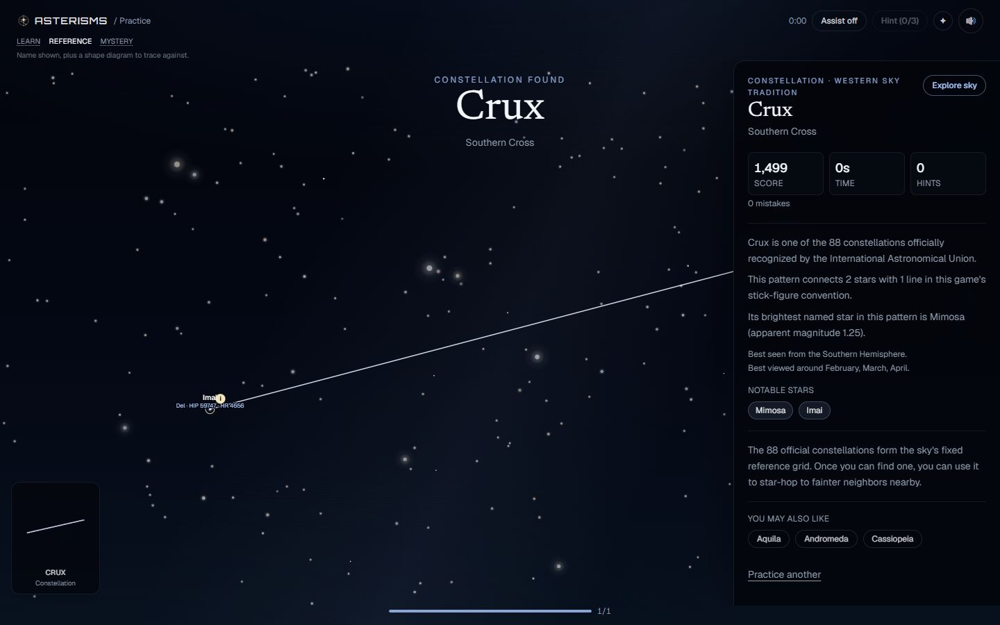

Asterisms
A web game for learning to read the night sky by connecting real stars into constellations and asterisms.

162generated patterns
9,036generated stars
79passing tests
System Summary
Licensed astronomy sources
→
Sync, build, validate pipeline
→
Compact generated catalogue
Browser gameplay
↔
Next.js API routes
↔
Restricted database runtime access
Key Engineering Decisions
- Joined multiple astronomy catalogues so puzzle shapes use real star coordinates, magnitudes, and identifiers instead of hand-positioned points.
- Projected RA/Dec with a gnomonic tangent-plane projection, then rotated and scaled patterns without distorting their geometry.
- Made Daily deterministic from UTC date so the puzzle remains playable even if score persistence is unavailable.
- Separated realistic star rendering from touch-friendly SVG hit targets for mobile and desktop play.
Quality + Reliability
- Current validation passes: data validation, tests, typecheck, lint, and production build.
- Generated data validation reports zero warnings and zero hard failures.
- Database-backed routes degrade gracefully; core gameplay catalogue is static app data.
- CI runs validation, tests, typecheck, lint, and build.
Limitations
- Not a professional astronomy simulator or location-based observing planner.
- No accounts; score identity is anonymous and device-local.
- Score validation is a plausibility filter, not full anti-cheat.
- Mythology and broader sky-culture story text are deferred pending reliable sources.
What It Demonstrates
Asterisms demonstrates domain learning, data pipeline design, interactive rendering, product UX, API design, database-backed leaderboards, graceful degradation, and validation discipline across a real full-stack project.